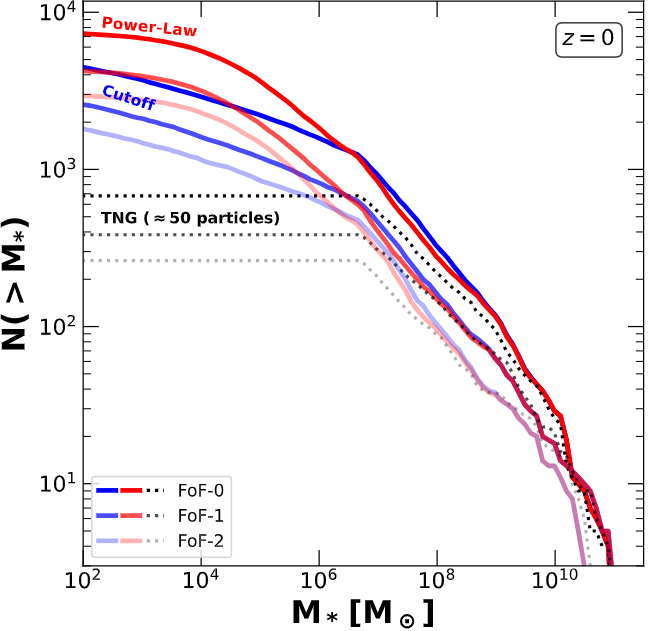

The abundance and radial distribution of faint and ultra-faint dwarfs in galaxy clusters
- Methodology: We combined the TNG50 cosmological hydrodynamical simulation with an empirical tidal evolution model to overcome the numerical resolution limits that typically cause the artificial disruption of dwarf galaxies in standard simulations.
- Predicted Abundance: By applying this model to the three most massive clusters in TNG50, the study predicts that clusters with a virial mass of $\sim 10^{14}M_{\odot}$ harbor a vast population of faint and ultra-faint dwarf galaxies, estimating between 2,000 and 7,000 systems with stellar masses $M_{*} > 100 M_{\odot}$ at $z=0$.
- Radial Distribution: While these satellites generally trace the underlying dark matter profile of the host cluster, applying observational detection thresholds tends to exclude the most heavily stripped objects located in the inner regions—a prediction that upcoming surveys by the Euclid, Rubin, and Roman telescopes will be able to test.